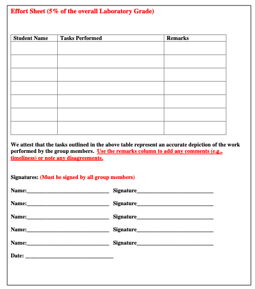

Laboratory Reports#
The primary deliverable is a laboratory report for each experiment.
General Concepts#
A laboratory report is a type of memorandum. Memorandums (Memos) are a type of informal report. Memos should be clear and concise documents.
Some general guidelines regarding memos are: The purpose of the memo should be clearly stated. Headings may be used to improve clarity. In longer memos (such as laboratory reports for this class), you should summarize your message before going into a detailed discussion related the purpose of your memo. A memo should clearly state what you expect to happen next. You should normally provide a recommendation or a suggested action.
Format#
Memorandum formats vary among organizations (a specific format for the laboratory reports is presented below). All memos have at least 4 parts:
a header section (similar to an address block in a letter),
a purpose section,
a discussion section, and
a recommendation section.
Some optional parts depending on the nature of the communication are summary sections and possibly supporting documents and/or data.
CE 3105 Report Format#
Cover page: Contains title of report, authors of report, dates of report (date of submission & date of experiment), and name of report recipient (Course Instructor). Also please include your course section number.
Table of Contents: Contains the contents of the report including a list of figures and a list of tables.
Title and Objective: This section contains a descriptive title and an explaination of the purpose of the esperiment.
Background/Theory: This section contains an explaination of the theory/governing principles behind the experiment. Typically, it will involve some application of the Continuity, Energy and/or Momentum Equations to a specific control volume and will result in either an equation for flow rate, pressure change or applied force that will be measured in the experiment. Describe and cite sources for any equations used to perform the analysis of the experiment.
Materials and Equipment: This section contains a description of equipment and tools employed in the experiment, often a sketch (or photograph) of the equipment and a list of the variables used/measured in the experiment (with units).
Experimental Setup: This section is an explicit description of the experimental setup
Procedure: A step-by-step recipe for performing the experiment.
Results/Data Collection: The results both raw (measurements), and reduced (interpreted results based on the measurements). This section typically contains graphs and tables of raw and interpreted results.
Data Analysis: Analysis will involve a comparison between measured/interpreted (from experiment) and predicted (from theory) results. The results should be explained (using words!). Label graphs and tables per ASCE format. Do not show a graph or a table without an explanation. The section will often contain error calculations, with a sample calculation of error analysis for one lab trial. A table of calculated error analysis values for all remaining trials is also included in the error analysis sub-section.
Conclusion and Discussion: In this section, interpret the results in the context of:
Compare the calculated values to the reference values.
Discuss any discrepancies between the two values. Were they consistent?
Discuss potential sources of error.
Suggest improvements to the experimental setup or procedures that could reduce error in future experiments
Note
Here is an simulated report that can serve as a guide for the course. Actual experiment reports will vary in length and scope depending on the particular experiment.
CE 3105 Effort Sheet#
A completed effort sheet below is to be submitted with your laboratory report.

You can download a copy of the effort sheet here
{kind=link}
Warning
All team members must submit a copy of the team’s laboratory report, and the effort sheet to the server.
References#
Markel, Michael (1998) Technical Communication, Situations and Strategies, 5th addition, St. Martins Press, New York
Purdue University Online Writing Laboratory (Google)
Young, Trevor M. (2005). Technical Writing from A-Z: A common sense guide to engineering reports and theses. ASME Press, New York
Holman, J.P., (2012) Experimental Methods for Engineers, 8th Ed. (Chapters 15 Report Writing)